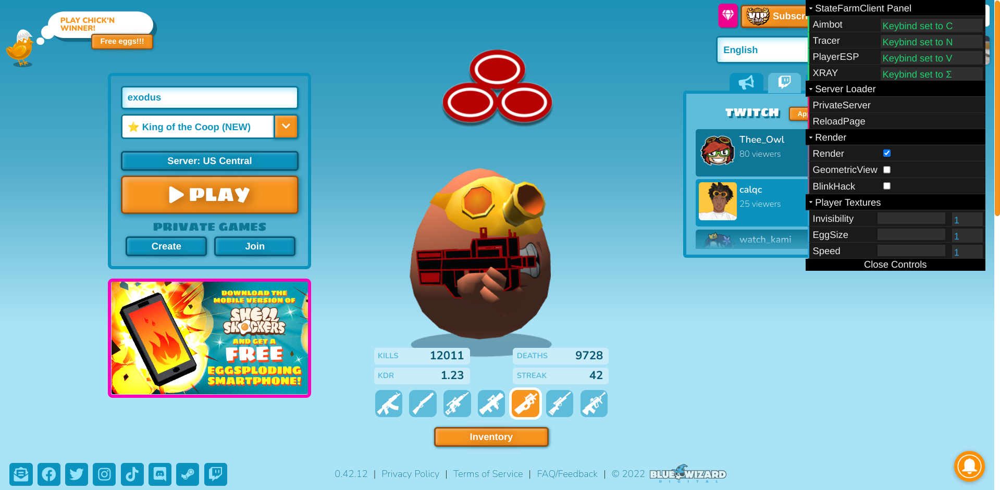

State Farm Client has a specialized custom panel with different features and modifications.
State Farm Client doesn't inject additional advertisements on sites the client is used for.
What is State Farm Client
State Farm Client is a Hack Userscript for the game Shell Shockers. Based off of Zertalious Aimbot, State Farm Client provides a cleaner, more developed script for your hacking needs. State Farm Client uses similar code compared to Zertalious Aimbot, but our client is more advanced, more easily usable, and keeps in mind the issues with the community.
https://github.com/hydroflame521/StateFarmClient https://discord.gg/UTqWuQ7nq8
Installation
An installation tutorial can be found to the right.